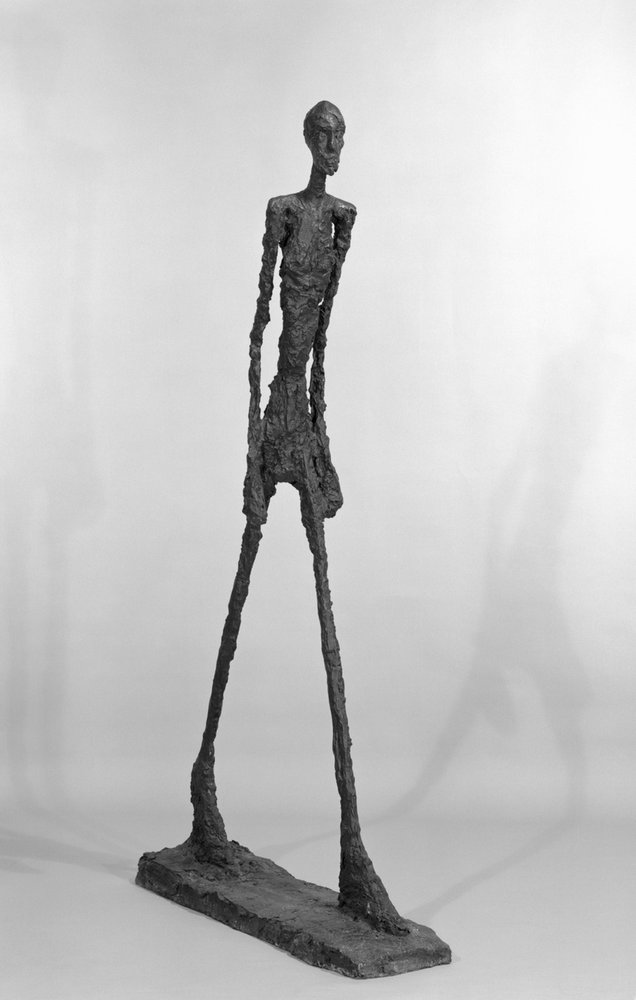

Walking Man II
Alberto Giacometti · 1960 · Bronze · 188 × 28 × 111.8 cm · Art Institute of Chicago
In copyright. Look and learn: shown for study, not for download.
This bronze stands 188 centimetres tall. Between 1938 and 1944 Giacometti's sculptures had been no more than seven centimetres high; the tall, slender figures came after the Second World War. He was fifty-eight or fifty-nine when he made this one. It went from the Galerie Maeght in Paris to the Hanover Gallery in London and the Pace Gallery in New York before the Art Institute of Chicago bought it in 1965.